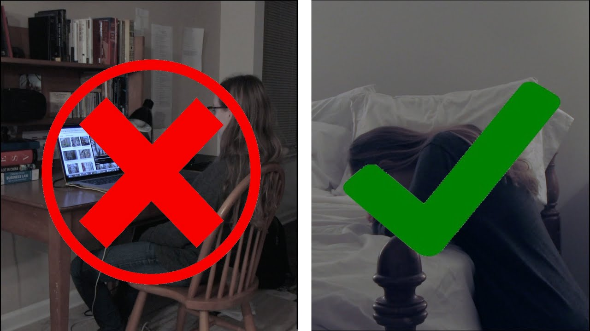

4 Simple Tools to Avoid "Made in China"
You have decided to avoid products made in China. Is it even possible?
Podcast: Parasocial Relationships
What happens when people feel like their favorite twitch streamer knows them better than their friends? Listen in on Heard it From a Hokie.

Replace Google with Prayer
A video calling for those who believe in prayer to seek their deepest questions from God.

Responsible Sourcing Network
Nongovernmental organization focused on raising awareness of unethical sourcing.